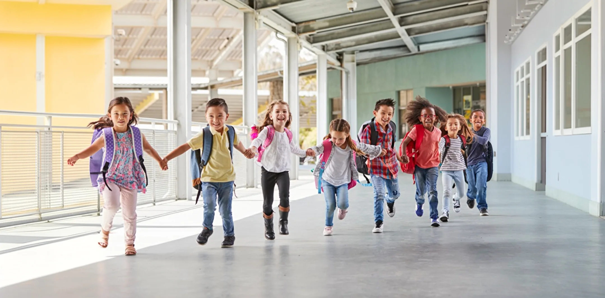
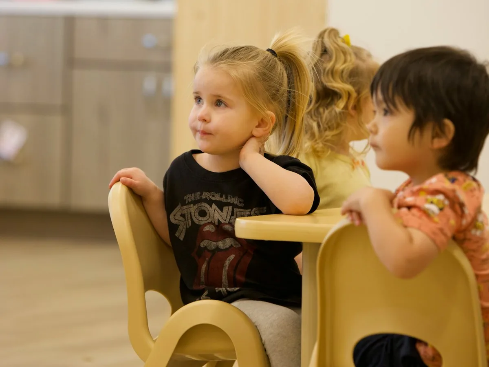
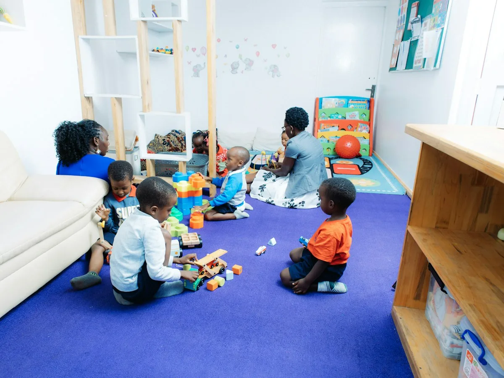
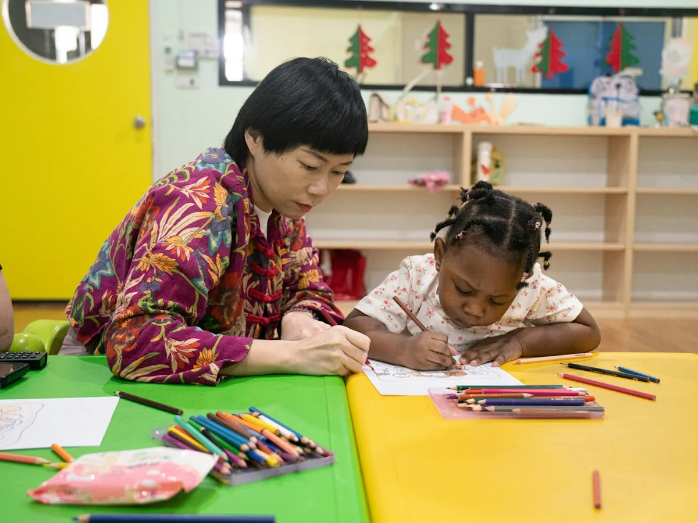
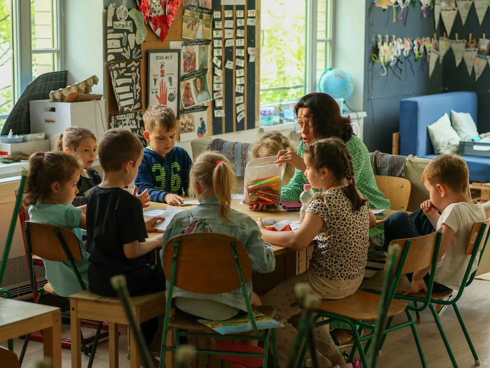
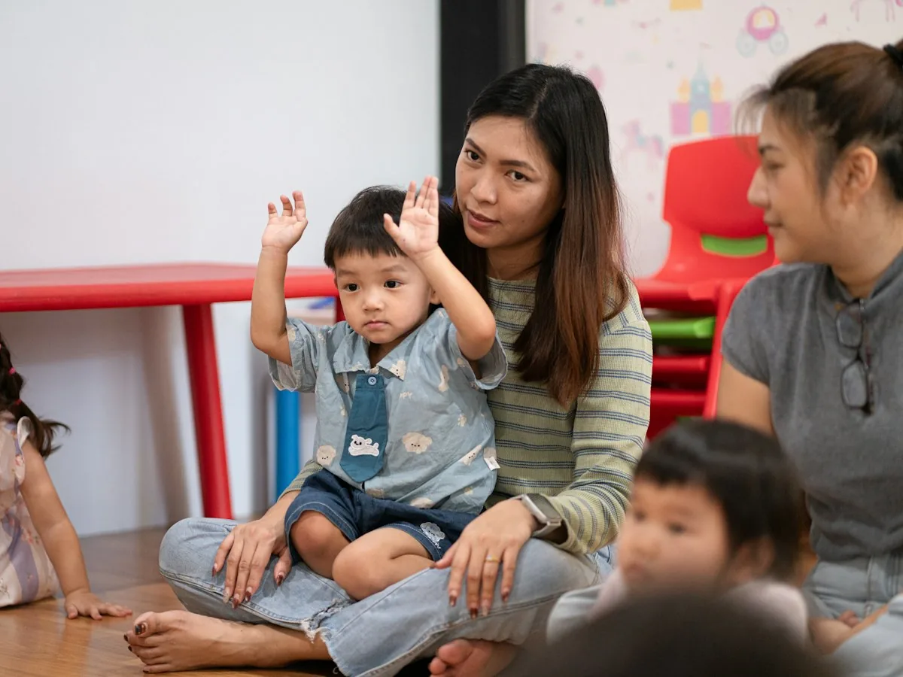
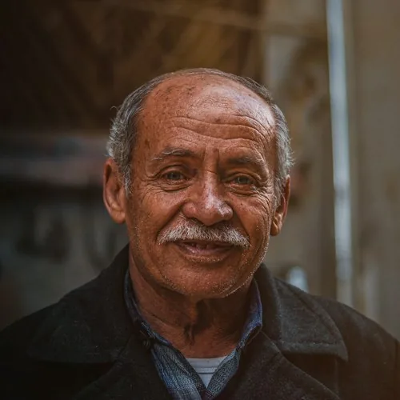
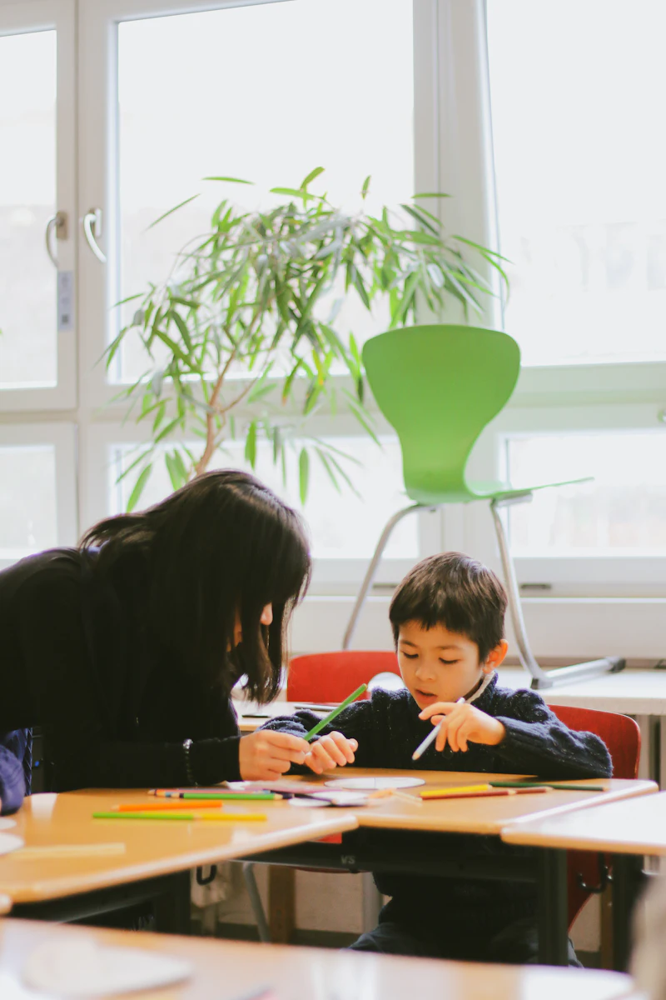

Kinderopvang Pluk Basisschool De Boomgaard
Kies de school die bij jullie past
Jullie opvang, ook jullie school?
Dat bepaal je helemaal zelf. We laten graag eerlijk zien wat dezelfde plek, bekende mensen en een warme overdracht voor je kind kunnen betekenen.


Kom gerust vergelijken Een kennismaking verplicht je tot niets.

Een plek die al vertrouwd voelt
Twee organisaties, één vertrouwde plek voor je kind
De stap naar school begint niet pas op de eerste schooldag. Je kind kent het gebouw, de mensen en het ritme vaak al.
-
Hetzelfde gebouw
Groep 1 zit een paar deuren verder.
-
Warme overdracht
Met jouw toestemming delen de opvang en de juf wat jouw kind nodig heeft.
-
Bekende gezichten
Kinderen van Pluk komen al eens kijken en spelen in de kleutergroep.
-
BSO onder hetzelfde dak
Na school gewoon hier blijven. Geen extra rit door de stad.
Van peuter tot kleuter
Wanneer moet ik wat doen?

Rond 2,5 jaar
Rustig oriënteren
Bekijk scholen en bespreek met de pedagogisch medewerker wat bij je kind past.
Tip: schrijf op wat je belangrijk vindt voor je kind.

Rond 3 jaar
Kom kennismaken
Kijk binnen bij De Boomgaard en ontmoet de juf van groep 1.
Tip: plan een kennismaking op een gewone schooldag.
Plan een kennismaking
Vanaf 3 jaar
Aanmelden
Kies je voor De Boomgaard? Meld je kind dan rond de derde verjaardag aan.
Tip: aanmelden kan al voordat je kind vier jaar is.

3 jaar en 10 maanden
Samen wennen
Je kind komt een paar ochtenden spelen in de kleutergroep.
Tip: vertel vooraf wat je kind tijdens het wennen kan verwachten.

4 jaar
Naar groep 1
Een vertrouwde stap naar school en daarna eventueel naar de BSO.
Tip: leg de tas de avond ervoor samen klaar.
Wat betekent dit voor jouw kind?
Kies de geboortemaand en -jaar. Dan krijg je een beeld van jullie persoonlijke route.
Even binnenkijken
Zo voelt een dag in groep 1–2
Bij De Boomgaard leren kleuters vooral door te spelen. Er is ritme, ruimte en persoonlijke aandacht.
- Inloop en samen in de kring
- Spelen en werken in hoeken
- Fruit eten en buiten spelen
- Samen lunchen in de klas
- Naar huis of door naar de BSO
Ervaringen uit het gebouw
Wat de juf en ouders vertellen
Veel kinderen ken ik al vóór hun eerste schooldag. Dan voelt groep 1 niet als een onbekende wereld, maar als de volgende vertrouwde kamer.
Mila kende de juf al van het buitenspelen. Dat maakte haar eerste dag zoveel lichter.
We hebben meerdere scholen bekeken. De vertrouwde omgeving én de onderwijsvisie gaven voor ons de doorslag.

Vader van Sem Groep 1Zelf ervaren hoe vertrouwd het voelt?
Plan een kennismakingKiezen zonder druk
Vergelijk gerust
Je kind zit op Pluk, maar je kiest zelf een school. Bekijk ook andere scholen. Zo weet je zeker dat je kiest wat bij jullie past.
Neem je eigen vragen mee
Een kennismaking is vaak zo voorbij. Daarom hebben we de belangrijkste vragen voor je verzameld in een printbare checklist. Met schrijfruimte voor wat je opvalt, zodat je de scholen later eerlijk naast elkaar kunt leggen.
Download de checklist (PDF) 1 pagina · 8 vragen · ruimte voor notitiesOnafhankelijke informatie
Vergelijk ook buiten de kennismaking
Goed om te weten
Veelgestelde vragen
Openheid begint bij duidelijke antwoorden. Staat je vraag er niet bij? Bel of mail ons gerust.
Zijn Pluk en De Boomgaard dezelfde organisatie?
Nee. Pluk en De Boomgaard zijn zelfstandige organisaties. Ze delen een gebouw en werken praktisch samen rondom de overgang van opvang naar school.
Moet mijn kind naar De Boomgaard als het bij Pluk zit?
Nee. Je kiest als ouder altijd zelf een basisschool. Een kennismaking is vrijblijvend.
Hoe ziet het wennen in groep 1 eruit?
Voor de vierde verjaardag komt je kind een paar keer meedoen. We stemmen dit met jou af en zorgen voor herkenbare gezichten.
Kan mijn kind na school naar de BSO?
Ja, Pluk biedt ook BSO in hetzelfde gebouw. De schooldag loopt zo rustig over in de middag.
Wat kost de school?
Basisonderwijs is kosteloos. De school kan wel een vrijwillige ouderbijdrage vragen voor extra activiteiten. Je kind mag altijd meedoen, ook als je deze bijdrage niet betaalt.
Wil je je kind meteen aanmelden?
Dat kan, maar hoeft niet tijdens de kennismaking. Neem gerust eerst de tijd om thuis te vergelijken. Als je wilt aanmelden, helpt De Boomgaard je met de vervolgstappen.
Kom een gewone schooldag ervaren
Voel zelf of het bij jullie past.
Je loopt samen door de school en praat met de juf van groep 1. Rustig, persoonlijk en zonder verkooppraatje.
Plan een kennismakingNog niet zover?
Krijg één mail wanneer het tijd is om je te oriënteren. Meer niet.
Stuur mij een herinnering